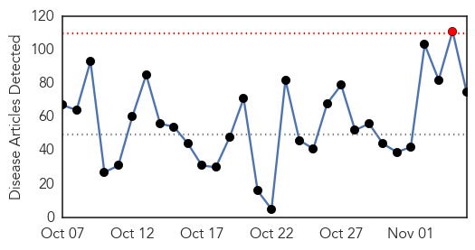
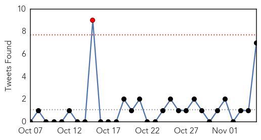
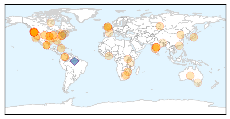
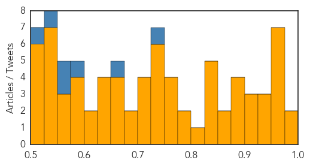
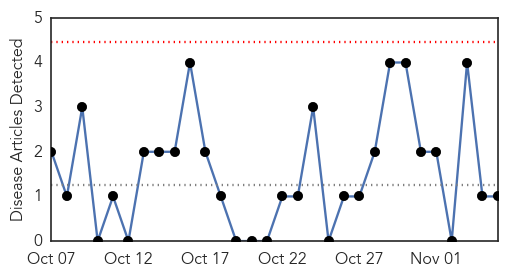
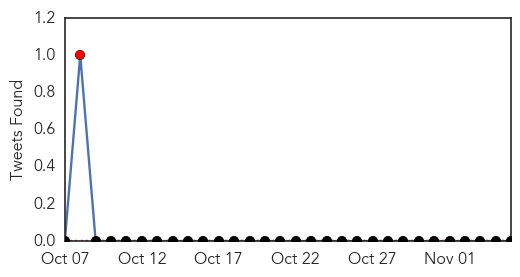
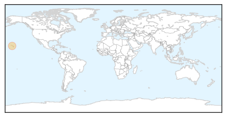

Unknown
30-Day Web Trend
1 alerts, 0 warnings

30-Day Twitter Trend
0 alerts, 0 warnings

Article Locations
Article Confidences
Top Articles:
- 0.984
- Get the shot: Carson City area flu clinics Thursday and next week
- 0.979
- Infectious outbreak at KPH, no deaths
- 0.969
- Florida State research advances flu treatments
- 0.957
- Oregon school pumpkin carving party suspected in norovirus outbreak
- 0.956
- Oregon school pumpkin carving party suspected in norovirus outbreak
- 0.955
- Oregon school pumpkin carving party suspected in norovirus outbreak
- 0.955
- Oregon school pumpkin carving party suspected in norovirus outbreak
- 0.955
- Oregon school pumpkin carving party suspected in norovirus outbreak
- 0.953
- Chipotle now linked to 39 confirmed E. coli cases, 14 hospitalizations
- 0.948
- Japanese Encephalitus in Cambodia, National, Phnom Penh Post
- 0.939
- Ensure your tot is protected against flu!
- 0.938
- First flu case reported in Waterloo Region for 2015/2016 flu season
- 0.916
- Update: 41 E. Coli O26 Cases in OR and WA Associated With Chipotle Restaurants
- 0.914
- Oregon norovirus outbreak may have emanated from Halloween pumpkin-carving party
- 0.905
- Health officials urge people not to consume apple cider bought from Color Drive vendors
- 0.898
- Symptoms of E. coli reported from Deschutes County; Bend Chipotle location remains open
- 0.897
- CO Officials: Infected Food Handler Suspected Source of 3 Typhoid Fever Cases
- 0.897
- How great is the threat of an explosion of smallpox from the thawing permafrost in Siberia?
- 0.893
- Chipotle Testing Seattle, Portland Restaurants to Find E.Coli Outbreak Cause
- 0.857
- Scarlet fever making a comeback
- 0.853
- Scarlet fever returns to Europe and Asia
- 0.847
- The return of scarlet fever: Is it too tough to treat?
- 0.843
- Tapeworm found in coyotes and foxes could pose risk to humans, Public Health warns
- 0.843
- Pig virus scare turns out to be minor disease
- 0.841
- Health officials add 4 more cases to state's Chipotle E.coli outbreak
- 0.831
- CDC Investigating As E. Coli Outbreak Linked To Chipotle Sickens 39
- 0.813
- Scarlet Fever Re-Emerges In Asia, Europe : Trending News : University Herald
- 0.785
- Which African countries are winning the battle against malaria?
- 0.775
- Chipotle closes dozens of locations as more confirmed E.coli cases emerge
- 0.761
- Experts ‘amazed’ by tapeworm that spread tumors to man
- 0.759
- CDC Investigating As E. Coli Outbreak Linked To Chipotle Sickens 39
- 0.757
- How CDC Is Using DNA Technology in Suspected Chipotle E. Coli Outbreak Investigation
- 0.753
- 14 lose eyesight after botched surgery in Maharashtra’s Washim
- 0.743
- CDC reports Increase in Multi-state Outbreaks
- 0.742
- Scientists shocked to find Scarlet Fever is making a big comeback
- 0.738
- Health Workers’ Shortage Affecting Maternal Health Project
- 0.730
- 25 Poultry farmers receive GH¢1million compensation for losing farms to bird flu
- 0.729
- Dr Google will see you now
- 0.727
- 4 regain sight after corrective op at JJ
- 0.711
- 14 lose eyesight after surgery in Maharashtra’s Washim
- 0.710
- Superbugs mean more infections and deaths after surgery, chemotherapy
- 0.706
- Bluetongue virus claims more French cattle
- 0.703
- Karoun Dairies Cheese Link in 30 Listeria Cases
- 0.684
- Chipotle responds to the 35 cases of E. coli infection
- 0.683
- Four lose eyesight due to botched cataract surgery
- 0.672
- Free Flu Clinics This Month And Next
- 0.669
- Chipotle E. coli outbreak grows, 41 cases in two states
- 0.660
- Washington Restaurant Involved in Salmonella Cases Reopens
- 0.659
- Hand, Foot, and Mouth Disease Outbreak at Texas Elementary School
- 0.643
- Possible Lyme disease sufferers heading south for tests
Showing top 50 articles...
Top Tweets:
- 0.743
- Vídeo de: Honduras fortaleció el diagnóstico y el tratamiento de la malaria en Olancho. defeatmalaria
- 0.664
- De acuerdo al documento AIM, el rendimiento de las inversiones en la reducción malaria es de 40:1. Vale invertir para venceralamalaria!
- 0.591
- RT: Yo pienso que si quieres cobrar en dolares un servicio que haces en Venezuela, con materiales/implementos de Venezuela es i…
- 0.583
- Have you gotten your FluVax? Vaccination is needed every year bc Flu viruses constantly change & immunity from flu vax declines over time.
- 0.568
- RT: You CANNOT get the flu from flu shots. They're made of killed virus particles. KnowFlu
- 0.553
- Hay microscopistas en las zonas más alejadas de Honduras. diamalariaamericas DefeatMalaria
- 0.530
- En 2014, Honduras reportó 3.380 casos de malaria. Una reducción del 90% en comparación con los casos notificados en 2000 DiaMalariaAmericas
- 0.523
- Honduras cuenta con vigilancia epidemiológica y vectorial. También usa el cambio de conductas en las comunidades para venceralamalaria.
Pertussis
30-Day Web Trend
0 alerts, 0 warnings

30-Day Twitter Trend
1 alerts, 0 warnings

Article Locations
Article Confidences

Top Articles:
Top Tweets:
-
No tweets found for Nov 05, 2015